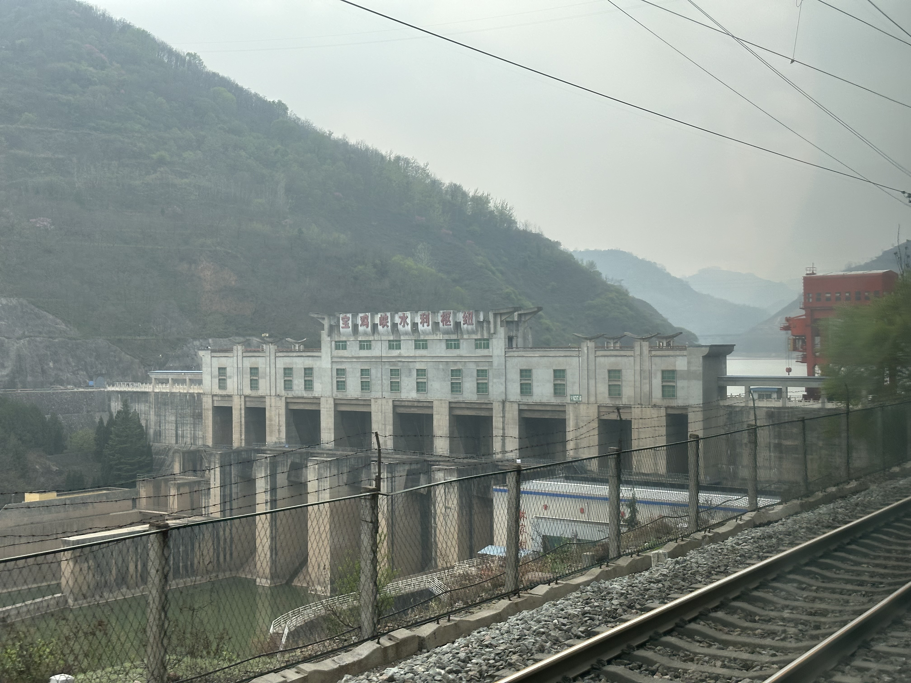
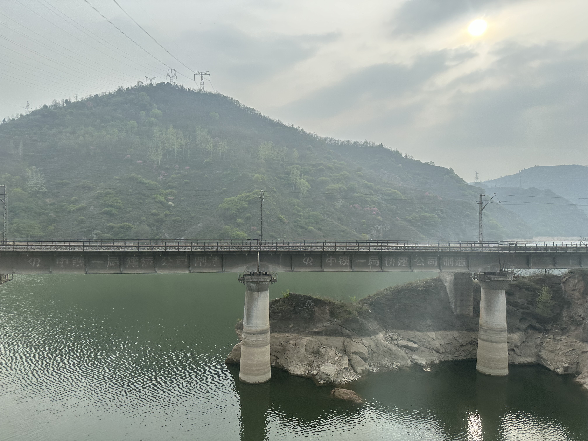
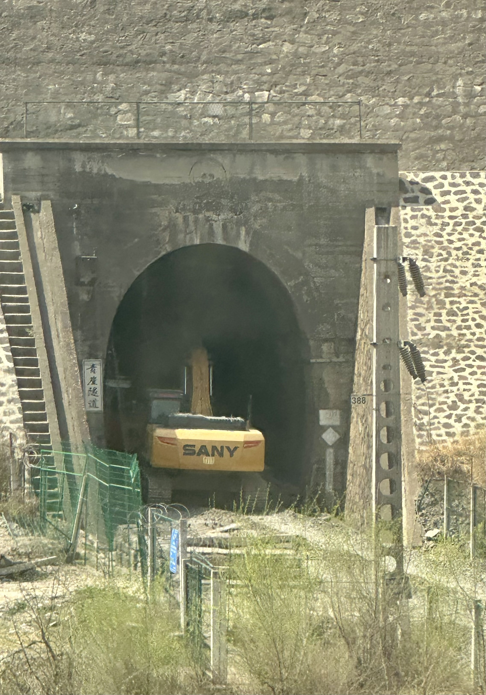
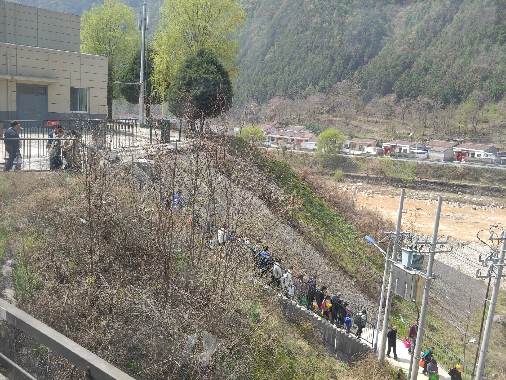
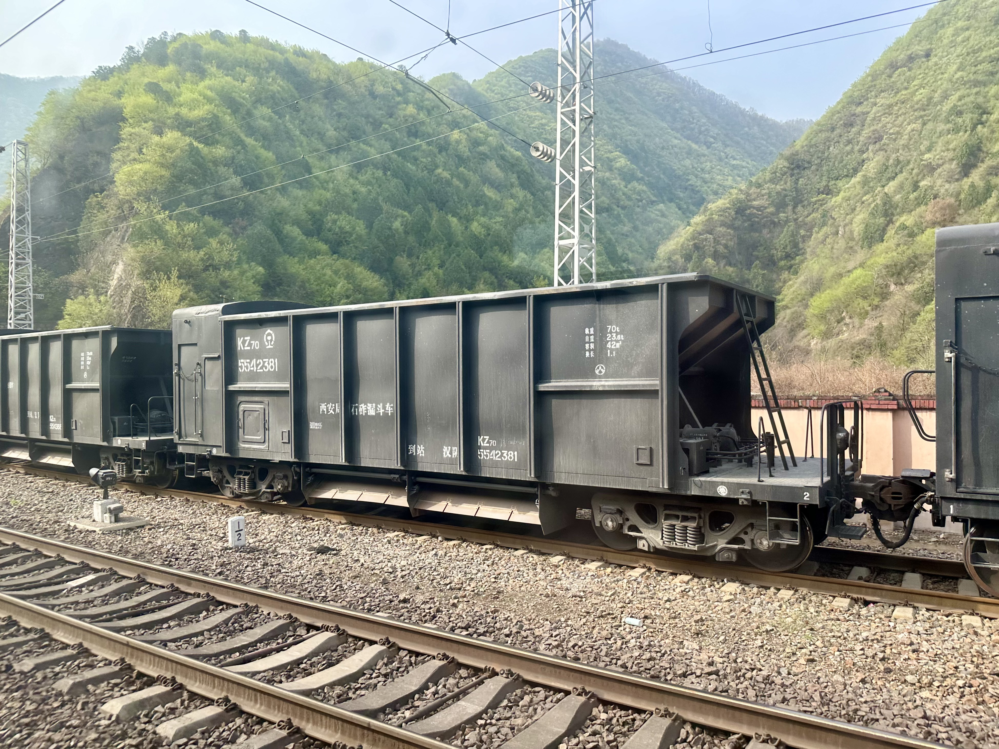
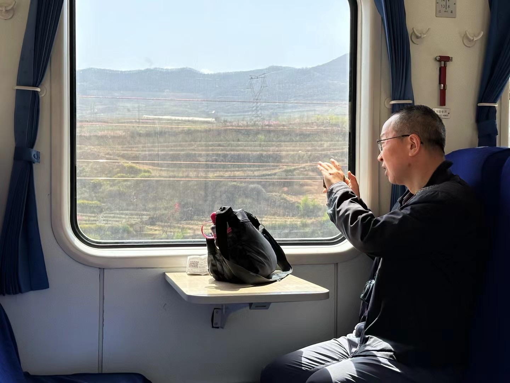
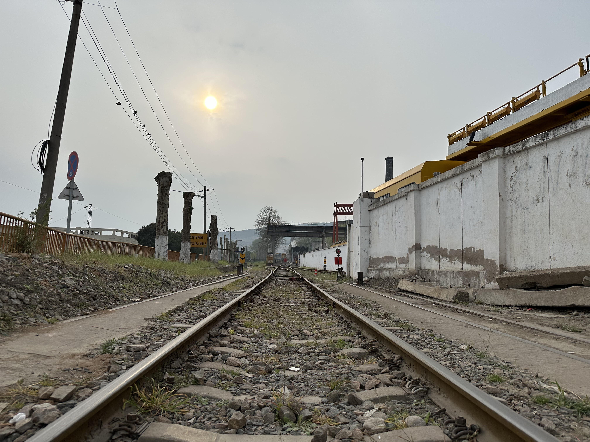
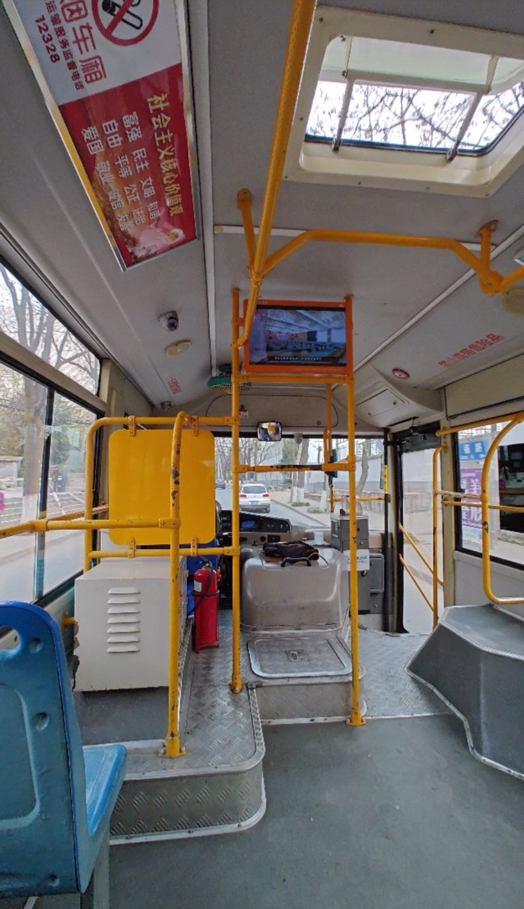
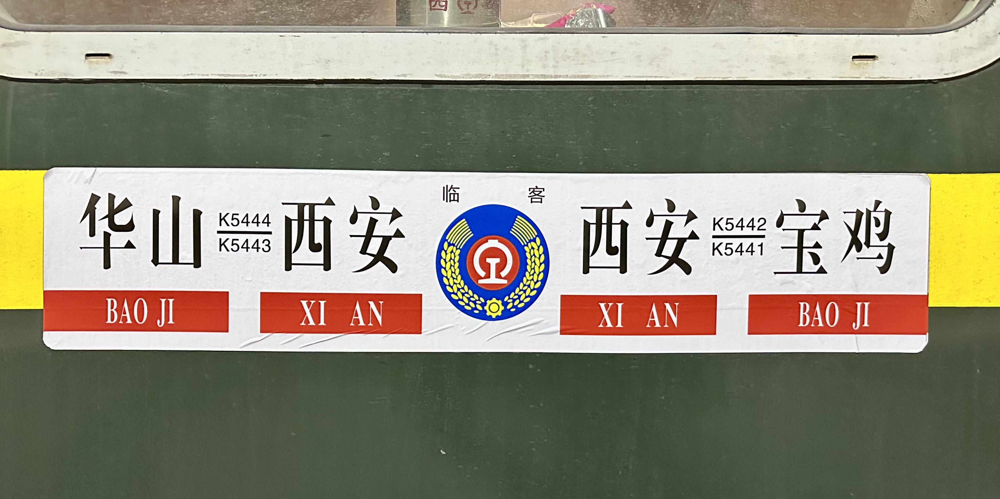

古木·新生
这个清明节与往年相比少了很多出行的灵感。西局的原色双层25K型客运列车送了将近一半回南车浦镇大修；我的心大约也已经是随着这些大修的车回到南京去了——毕竟对于家在南京的我来说，我不可谓不渴望着与双层一同回去；如若我乘着那趟车，那自然是更好了。不论如何，双层的局部告假确已经让我有了几分怠惰，往日双层的K1001/2/3/4这一对列车如今也只能带着平凡的单层刷绿列车前往重庆，于是终于是计划着在学校老老实实地度过一个孤苦无聊的清明节了。
不过突然有一天我们的一位朋友传说双层会在某一天出来跑一趟临客，甚至有卧铺；于是跟他筹划着一起走一趟。后来了解到这一趟车会在凌晨到达西安并且会在足足5时5分后终到宝鸡，——在陇海铁路上由西安出发到宝鸡通常只需要不超过150分钟，——而票价确是一样；我们想着这自然是千载难逢“值回票价”的好机会。因此我们决定奢侈一把，乘坐软卧前往宝鸡。

买票的过程并不容易。由于双层软卧车厢的高度，车厢的上半层卧铺左右各只有1个铺位，下半层卧铺则是和其他普通卧铺车厢的1间4床格局一致；因此我跟这位朋友显然更愿意乘坐上半层的“包间”。然而通过12306显然不能实现“指定席”的目标，因此我乘坐稍早一些的车从引镇站出发，在半夜到达西安站后直奔线下售票点进行指定席位购票；我的朋友则现将身份证给我，在稍晚些时候与我在西安站会合。
重返引镇
引镇站在2023年2月28日之前仍是西安南站，但奈何西安枢纽计划在城南建设一座高铁站，只能让位。
我是在4月3日下班晚高峰在航天大道出地铁站换乘920路前往引镇站的。本以为这条公交线路每10分钟一班比学校附近发车间隔是其4倍的各条线路要来得不拥挤的多，可没想到淳朴的西安乡村居民为了赶上这班车甚至达到了跑到离站台100来米远的位置截停公交车蜂拥而上的地步。在不知道本地帮派规矩的情况下误了一班车，随后又亲眼看着两辆满载越站的车厢疾驰而过，于是终于是决定“打不过就加入”了——我也走到了站台百米开外，但依然挤不过回家心切的插队村民们。于是又误了一班车；终于在19:00赶上了这条公交线路这一天的末班车。

司机诚挚建议我从后门上车，我也确实这样做了。在这虚空公交站台停驻了10分钟后，920路公交车在2024年4月3日的末班车终于发车；由于920路公交车沿线全是村庄，而这些村庄的居民也不乏需要上下车的，因此我不得不成为肉夹馍当中的肉馅。中途有一位中年女士肩扛着桶装饮用水从后门上车，让整个车厢变得更加拥挤，也让我在乘车的过程中多了几分对这重大之物的避让。不论如何，我总算是在20:00前到达引镇站了；下车后清点了一下自己的随身行李，发现没有被窃任何东西。
还有一站路到引镇（站）……从未如此朝鲜的公交体验。我会好好地把他珍惜……
进入引镇后第一时间就是想着打票。我本希望在引镇站就能够把指定席的流程就完成掉，但很快我的这个想法就被处决了。
“您好，我想买两张K5485西安站到宝鸡站的软卧车票。”我随即从口袋里掏出两张身份证。
“好的。西安到宝鸡吗？”
“对，4点多钟出发历时5时5分的那班。”
柜台另一头的她额间突然冒出了一些汗珠；我料想今天断不是那般炎热，再加上现在已经日落有些时候，因此便也想着我可能是有些为难她这位跟K5485次列车毫无关系的车站的工作人员了。我正豫备着说出“不能的话就算了”之类的话，她终于率先开口。
“是西安去宝鸡的吗？”
“对。”我嘴上虽这么说着，但对于信息的逐渐减少心生了几分疑虑。于是我不自主地把头够到柜台的另一头，好让自己看到她的操作；尽管我并不喜欢这样做。果然，我的疑虑是正确的；她为我精心选择了两张5:05从西安站出发的T113次列车。
我便再次重复了我的车次。她的焦头烂额变得更明显了；之后她告诉我这里没有办法选择铺位，于是只好作罢，去西安站解决问题了。
等级不高的车站普遍站房不大，引镇站也不例外。因此安检工作是在售票之前就已经完成的；我径直走进候车室，凝望起车站大屏。此时发现，引镇站的车站大屏近乎是一种完全摆烂的状态——可能车站比较老，受不住这么高尖端的技术吧。


在候车室又没有事做。于是又走到售票处，抬头发现原来车站用的是Microsoft Excel。

因为是清明假期前夜，在引镇站候车的大学生非常多。我没有位置坐；思来想去在这站房里呆站着也不是很有意思，于是走到安检处的电磁探测门附近，观看车站工作人员的忙碌。大学生依然在源源不断地输入着车站；安检的站务会帮女学生们把行李箱从安检机器上搬下来。相比售票人员，这几位站务时不时的擦汗就显得合理了许多；但我终究没有合理的理由帮助站务来做这些苦差，于是还是在旁边观看。
观看了大约5分钟，一位女士向我走来，问我高不高兴加伊的微信。我自然是不知道伊的想法的；但临近假期又是在公共场合，公开拒绝显然是与这宁静祥和的气氛有违的。于是还是加上了；后续交谈才知道伊准备在这个假期前往江西婺源。近些日子全国各地对本土旅游景点的宣传比疫情刚结束那段时间多了非常多，加之铁路网日趋密集，越来越多的大学生在假期选择成为特种兵，在非常短的时间内打卡这些热门目的地。
大学生的日子真是越过越好了。我想。
正想到这里，她告诉我是看我一个人在车站走来走去想跟我交个朋友。大学生的性格也算是越来越活泼了。我想。
在车站门口又站了一会。22:00左右车站只剩我一个人了。我终于有了位置可以坐；因此走到按摩椅上，仰面躺倒，等待引镇站这天的最后一班车大驾光临。在距离开车还有10分钟时，我站到了检票口前。
“你是干嘛？”
我顺这声音抬起头，看见是站务在向我问话。
“我来坐车……”
“什么车？”
我对她这一问蓦地感到无所适从——莫不是在验证我是不是行家？但不论如何，我总得如实汇报。
“
“
“有啊，就今天临时开的。”
她顿时露出一副敬仰的色情，在检票口立正了。
很快，检票时间到；我走上站台，想要尽快结束今天日落之后的引镇之旅。


列车在23时到达了西安站，比计划提早了很多。我率先前往车站南广场售票处准备席位指定。后来才听工作人员说他们“看不到铺位在上层还是在下”（事实上也确实如此）；此时朋友也已经到了。随后，我们开始尝试其他窍门——能够让我们上层卧铺确定的窍门。
社团里一位前辈指导我们上层下铺的编号可能包括偶数——这在与普通卧铺车厢编号方法相同的下层是不可能的。我们瞬时拿定了主意，向柜台的那位可怜人二度请求出票，最终发现了偶数号码的下铺。我们随即锁定了这张铺位和经过计算确认与它相同房间的另一张车票，一切总算是定下来了。


不论如何，在我们购票的时候上层卧铺还没有售完，我们也最终得偿所愿，结果总是好的。
西安→宝鸡（K5485）：史上最值的5时间
深夜的候车室和2个月前的情况相差无几，依然是空旷得很。在候车室谨慎地度过了一个子夜，很快就到了我们的检票时间。
在检票口遇见了另一位手捧相机的乘客。毫无疑问，我和我的朋友和他是仅有的5时5分享受者；但我们终于不敢打破彼此之间的寂静，与早些时候我遇到的外向女大学生形成了鲜明的对比。过了半晌，这位陌生人率先开口。
“应该不会有正常乘客大半夜来西安站坐这个票价不变时间还长的快车吧！”
我们顿时默契地露出了笑容。
“不知道这多出来的2到3个小时是从哪里来的。”我说。
“多半是沿线各站临停避让吧。”
我们相谈甚欢，这才知道这位陌生人是现在西安就读的高中生。遥想我高中时清明节无非只有被迫的“自愿补课”之类，又看到他掏出了机车模型种种，心中登时只剩与在秦岭站时相似的羡慕之情。
开闸放人的时间很快就到了。这位陌生人购买的是硬座车票，我们只能由衷祝福他有个好梦——尽管对一个高中生来说可能并不需要将这宝贵的5个小时用来睡觉。 很快走上扶梯，向下到达站台；此时那位车友已经不见了踪影。

检票开始前我们就已经听到了人工检票员对讲机里传来的“5485到站”的消息。在这个时间差内，从陕北来西安的乘客多半已经全部落车了，而再严重的烟瘾也不应该把人在凌晨唤醒，所以站台上没有什么人。对于我们这种在软卧包厢“多待一秒就是多赚一分”的乘客自然是直奔主题，前往我们的卧铺车厢。我们本想录影留念，但被车厢门口查票的女士好心地制止了。据伊称之前有人录像了一些影响不是很好的事情；我们除了惋惜也只能表示遗憾，不过伊允许了不拍摄工作人员的情况下的拍摄。于是我们抓住发车前这二十多分钟车厢内可能没有工作人员突然出现的时间进行拍摄，随后便是倒头就睡。


双层车厢主要都是在上世纪末中华人民共和国铁道部“在保持单趟列车长度不变的情况下增强其运力”的构想下诞生的。浦镇在1996年后生产了一批双层车厢后也就收手，因此双层车厢只会是过一天少一天。万幸的是前往浦镇大修的8节车厢按照A5修后的惯例还能再运营至少8年；但不论如何，宝鸡存的这几节确已经是全国仅剩的仍在图定运行的原色双层列车了——尽管这次清明假期他并不是，而图定的列车往往会因为“淡季”停运。
_Approaching_Yinzhen_Railway_Station,_Mar_1_2024.jpg)

走进我们的包厢；如我们所预算的，上层的卧铺车厢确为二人包间。由于西安站只是中途站点，车厢内床具相对不是很齐整并不奇怪；包厢顶部的中央空调传来强劲的风扇声，证明着自己比这个包间中任何一个人都要年长的资历与存在。

和常规软卧车厢不同之处在于，我们的包厢门是可以上锁的，且从外部无法打开。

我们在激动中离开了西安站。17分钟后，我们按照预定的时间到达了咸阳站。这趟车罕见的在咸阳站停靠超过20分钟；待避了Z595、Z377、Z127三趟经陇海线向西的直达列车。列车在5:23准时离开咸阳站，随后茂陵站临时停车待避了包括T55在内的众多列车。在此之前，我和我的朋友在列车跨越咸阳西站时甚至开始担忧会不会“5时5分”的预计时长只是虚报；当列车在这个我们从未听过名字的车站附近开始减速时，我们悬着的心又放了下来。
既然这趟列车用行动回报了我们的“期待”，那我们自然也要让车厢把自己的能力全部发挥出来。我们因此选择了睡觉；这节车厢的上层远离了轮毂的碰撞，行进时摇晃得也十分舒服；加之在候车室肯定是睡不好的，于是很快便睡着了。等到自然醒时，列车已经快到宝鸡了；于是仓促穿衣，准备出站。在离停车还有3分钟左右时，一列轨道探伤车在宝鸡机务段静止地一闪而过。我定睛一看，它来自上海铁路局。

双层软卧车本质上其实是一个房间额外高出了1层床位；相比于下层的包厢，上层的床位在保有了窗台的情况下获得了更高远的视野和更宽阔的空间。再加上最近越来越多的乘客出行时强调自身的隐私，不允许其他乘客私自坐在自己所购买的下铺床位上，这种一边一铺的布局令人眼前一亮。显然，常规的软卧车厢不论上下铺是一定比不上这种特殊卧铺的。 如果未来和朋友一起出游，花费点额外精力去指定这个席位还是很值得的；不过未来还有没有这种机会倒也很难说了。
宝鸡→社棠→福临堡（8359／60）：新定义城际轨道交通
本章节内容图片的均已过保密期，请尽情鉴赏。
宝鸡我来过不是一次两次了；但宝鸡出发的公益慢车我只坐过6063/4这一对。在朋友的盛情邀请下，决定乘8359次列车前往社棠；这趟车和其他小票车类似，在12306软件和网站上都只能看到一小部分车站；这趟列车更是无法通过12306购买。我们通过柜台买到在元龙下车的车票，之后计划在车上补票到社棠。
不知怎的，我总是潜意识里把“
虽然是小票车，但是在宝鸡站排队等待检票的人依然不少。当然不少人都是带着小孩出来玩的；我作为一个外地人自然不知道沿线周边有什么可玩的，因此自然不能评价什么。上车前自然少不了对方向牌的鉴赏；这时看到远处熟悉的和谐3型电力机车的身影，再一看时间，便不假思索地报出对方6063/4的老熟人身份。


上车之后本想按着行程信息提示上的安排落座，结果发现我的位置已经有人坐了。
“您好我是这个位子。”我说。
“这个车上都随便坐。”他立即回答。
我顿时感觉到莫大的歉意——我确没有作为一个外地人应有的入乡随俗的意识。于是找了个朋友旁边的位置坐了；由于是1车，我们座位又位于车厢前部，可以很好地看到韶山7D的尻尾。在列车员的一番手指口呼之后1分钟，列车开动了。很快列车驶离了福临堡；出乎我意料的是这一站不但没什么下车的人反而上了很多人。整节车厢从热闹变为了鼎沸；一些戴着黄色鸭舌帽的西铁维护人员也和身边的路人展开了攀谈。
陇海铁路离开关中平原的重要标志之一是宝鸡峡水利枢纽。在经过宝鸡峡之后，陇海铁路便正式踏上中国地形的第二级阶梯；与之相对的，铁路的走线便也变得曲折了起来。由于地形等限制，现在的陇海铁路福临堡至社棠的这一段西行和东行采用的是完全不同的两条走线；换言之，今天的8359和8360两次列车虽然看上去是往返但其实几乎并不走回头路。


目前因为既有线提速改造，陇海铁路正进行线路运能提升；随处可见一些原有的线路被拆除的现场或遗迹。





列车很快就到了社棠站。显然就算我们是立即折返也需要按照规定下车；幸而社棠的工作人员都非常友好，甚至在我们拍照过程中主动看向镜头（我不是故意要拍他们）。由于列车需要换挂，我们在站外还需要等上20分钟左右。这个车站每天只有8359和8360这一来一回的列车停靠，车站的入口也相对简单些。


在门口踱步时偶然瞥见车站站区内的轨检和一部分特种车。
 在社棠站附近目击到的特种车和轨道检查车 在社棠站附近目击到的特种车和轨道检查车 |
||
 TKT-Z39-096674 TKT-Z39-096674 |
 TKF-25G-096369 TKF-25G-096369 |
 TKT-Z39-069965 TKT-Z39-069965 |
正当二人悄悄感叹运气之时，社棠站的大门开了。我们很快准备上车；当从低站台走上车厢时，列车员一眼就认出了我们。我们描述了我们的来意；整个车站顿时充满了快活的空气。

回程路上又看到一位手捧相机的乘客。“我小时候就经常走这条线，”他跟列车长这般说道，“现在退休了没事就来逛逛。”
返程路上人自然是越来越多的。在坪头站上来一位老人坐在我的面前。临近坊塘堡站时我的朋友终于拍照归来，问我这是哪一站；没等我回答，这位老人用关中方言已经给出了正确的答。随后见我们的车票上写着“福临堡”，便告诉我们福临堡还有一站路，大概一二十分钟。事实上也几乎是这样——我思忖他应当不是在福临堡下车，因为福临堡离宝鸡城区虽不远但还有一些距离；但他对这趟车的站点又熟悉得非常。
“您经常坐这个车么？”我用蹩脚的关中话问。
“对，”老人点头，并用食指轻点桌台，“我们进城都坐这个（车）。”
“进城的大巴少么？”
“基本上没怎么坐过；不知道。这个（火车）还快。”
我对这个答案虽不奇怪但略吃惊——要知道坪头站已经是宝鸡市境内的车站了。
“那您一般怎么回坪头？坐到社棠再折返？”
“对，对。”
这意味着他必须在宝鸡待一个晚上。“我从西安来专门坐这个车玩。”我又说。
“哦……西安。”他顿时露出一副想象的神色，“那一定很早就来了吧？这个车发的也不晚。”
“对，今天9点左右到的。”
随即便又聊了些别的，譬如为什么会想得起来清明假期乘坐这班对于宝鸡人而言意义非凡的列车，又譬如我等之所从来；很快就又到宝鸡峡了。
“过了宝鸡峡之后就快到（福临堡）喽。”
我点头，随即二人便又沉默。这时我们开始收拾东西往门口走，与列车员在车厢门口又开始聊天。
“不坐到宝鸡？”
“不了；正好福临堡也不远了，坐个公交也不错。”
“今晚就回西安么？”
“是的。
“下次再来啊。”
我们旋即开怀大笑，并许诺以肯定的回答。从给我们补票的机器来看与我们结下缘分的这一行人是宝鸡二队社棠一组的朋友们；我们很快下了车，但还是与列车和车上的人们有几分不舍，直到列车重又开动，跟我们刚刚还聊天的列车员在车上向我们挥手告别，我们依然意犹未尽。
“别拍了，车都走了。”
福临堡站的工作人员一边笑一边说。我们也配合地离开，让福临堡站的大门断开了我们与这一段旅程的链接。
陇海铁路自建成至今已近百年。曾经的陇海铁路曾作为西行为数不多的线路，为西部开发所做的贡献不计其数；也正是凭借着陇海铁路和宝成铁路，宝鸡在上世纪中后期迎来了发展的机会——可以说，这位乘客就是陇海铁路所养育出来的一个群体的一个写照。而如今，陇海铁路因逐渐难以跟上铁路运输要求而开始改造；作为早期依铁而建的工业城市，宝鸡又该如何在第三产业抬头的今天重新规划已经被铁路完全割裂开的城市布局呢？



在葡萄园镇附近，一座刻有中国铁路标志的建筑赫然茕立于黄土之上；房屋的玻璃虽尽已不见，但远处的老树依然高耸在青空之下。清明时节，这棵树又开出了新的绿叶，等待着近处“葡萄园”并不存在的“葡萄”。


宝鸡→西安（K5442）：乌龙遍地

在简单体验了宝鸡公交的非空调柴油车之后，吃了晚饭便往宝鸡站赶。准时到达站台后，开始了例行的方向牌鉴赏时间。等上了车之后依然是收到了不准拍照的告诫；定睛一看这告诫者正是早晨的那位。
乘坐这趟临客回西安主要是因为这趟车先是全线锁票，在开车前2天才放票，比同一趟车4月5日、6日的车票放的还晚——加之这趟车有软座在售，笔者怀疑这趟列车可能暗藏公务。抱着赌一赌的心态买票后虽然结果依然是软卧代座但还是硬着头皮认了。
上了车之后开始审视今天的照片，随后发现这趟列车的方向牌似乎有一些不对劲。

列车在驶离宝鸡时这节软座车厢只有我和我的朋友二人；在兴平附近上来一对母子，儿子非常年轻，目测不超过7岁。从后续母子的交谈来看这位儿子主动提出不坐私家车而是选择火车到西安，而他的父亲则精心为他们母子二人安排了软座票，没成想这是卧代。
也许经此一事后这位学龄前的人士也会对铁路有些兴趣。我想。
列车从宝鸡出发的发车时间就晚了10分钟。毫无疑问是为了待避某些晚点的图定列车。在到达咸阳时列车已经逐渐追回时刻表，但当我们担忧赶不上地铁而悬着的心刚放下来的时候列车突然在西安站西机务段附近停了下来。最终这趟列车依然晚点了10分钟到达终点站西安；我们仓促之中总算是赶上了地铁。
写在最后
坦率地说这一个清明节西安铁路局准备的略显仓促——从引镇站和列车的方向牌即可见一斑。不过毕竟这才能凸显“临客”的“临”——只有特定方向的车票余量严重告急了，这些车次才有“临”的必要。
相比于宝成铁路，陇海铁路远没有那般政治意义的重大；相比于京张铁路，陇海铁路也没有那般捅人脊梁骨。然而，正是这样一条铁路如今依然维持在“五纵三横主干线”的名单当中，为西北地区持续注能，拉动着沿线居民的往来。然而陇海铁路过早的建成时间和沿线城市过急的城市布局导致了如今大多数城市所面临的转型困境。可以说，像宝鸡这样的工业城市在陇海铁路沿线还有很多；而陇海铁路全线完成提速的部分则少之又少，宝鸡面临的困境尚且如此，更不必说其他城市。如今的陇海铁路西段仅凭昔日的“速度”已经赶不上高速铁路所带来的经济效益；相信此次扩能改造能够为整个西北地区带来一次新的“大提速”。也希望下一次重游关西时，新的陇海铁路能为我们游客和这些城市本身带来新的惊喜。